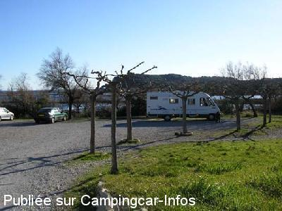

APN = Parking toléré jour/nuit de :
PEYRIAC DE MER
(N° 737)
Accès/adresse :
Parking de la Saline
11440 PEYRIAC DE MER
11440 PEYRIAC DE MER
Latitude : (Nord) 43.09244° Décimaux ou 43° 5′ 32′′
Longitude : (Est) 2.96257° Décimaux ou 2° 57′ 45′′
Tarif : 2016
Stationnement : 5 €
Paiement à l'automate par carte bancaire
Services :

Autres informations :
Conserver le ticket d'entrée sur lequel figure le code pour ressortir
Tél Office du Tourisme : +33(0)468 426 842
http://www.peyriacdemer.net/peyriacdemermaisontourisme.html
Le 11/09/2012 par RH
Le 19/04/2010 par SOLEIL11700

Le 04/02/2008 par asantkin
Le 18/05/2007 par bernard1
de
surgo
le 24/04/2016 :
Aire agreable bien située, très calme, proche de la saline et de la ville. Wc et vidange très correcte. le stationnement sur l'ancien camping est beaucoup plus prisé, que l'aire nouvelle gravillonnée et bien plate. Les deux sont très bien.
Aire agreable bien située, très calme, proche de la saline et de la ville. Wc et vidange très correcte. le stationnement sur l'ancien camping est beaucoup plus prisé, que l'aire nouvelle gravillonnée et bien plate. Les deux sont très bien.
de
Jane Smith
le 21/12/2015 :
Lovely spot in a really nice little place, but be aware that its closed in the winter and you can only access with a credit card.
Water, grey and toilet dumping all fine but push button water which takes AGES!
This is an aire and not just overnight parking.
Stunning walks in the area and lots of flamingos.
Free parking also available off season at the port down the road.
Lovely spot in a really nice little place, but be aware that its closed in the winter and you can only access with a credit card.
Water, grey and toilet dumping all fine but push button water which takes AGES!
This is an aire and not just overnight parking.
Stunning walks in the area and lots of flamingos.
Free parking also available off season at the port down the road.
de
Christian
le 07/04/2014 :
La nouvelle aire se situe à gauche apres avoir passé la barriere d'entree. Plus petite que la precedente
Sol plat et bitumé, aire agreable
La nouvelle aire se situe à gauche apres avoir passé la barriere d'entree. Plus petite que la precedente
Sol plat et bitumé, aire agreable
de
Thierry.B
le 19/03/2014 :
Aire très agréable (côté camping) désormais payante et idéale pour faire de belles ballades autour des salines. Attention, beaucoup de moustiques.
Aire très agréable (côté camping) désormais payante et idéale pour faire de belles ballades autour des salines. Attention, beaucoup de moustiques.
de
Arnaud Gauriat
le 15/09/2013 :
§ Passés le 12/9. Maintenant, l'accès se fait après paiement à une borne CB. Toujours 5 € pour 24 heures. Conserver le ticket (code pour sortir !).
Toujours très calme. Toujours de magnifiques balades autour des étangs.
§ Passés le 12/9. Maintenant, l'accès se fait après paiement à une borne CB. Toujours 5 € pour 24 heures. Conserver le ticket (code pour sortir !).
Toujours très calme. Toujours de magnifiques balades autour des étangs.
de
WALLY31
le 04/08/2013 :
Petit aire sympathique, très caleme, nous sommes passés en avril (gratuite). Coucher de soleil sur les salines avec vol de flamands roses en supp !
Petit aire sympathique, très caleme, nous sommes passés en avril (gratuite). Coucher de soleil sur les salines avec vol de flamands roses en supp !
de
Christophe
le 29/06/2012 :
Maintenant l'aire est juste à l'entree du stade, parfaitement plate, et tres bien indiquée en entrant dans le vilage (suivre diection le stade), c'est plus derriere le stade, mais en entrant à gauche.
Les rues sont etroites, mais ca le fait sans trop de problemes (j'ai un Flash 13 de 7m). En venant de Narbonne, il faut faire attention à prendre à Gauche sur la D6009 et non à passer sous la departementale (dependant du gabarie du CC).
C'est calme, pour se rendre au vilage, prendre le petit ponton sur la saline (traverser la route en face de l'aire, et prendre à gauche) c'est superbe.
Maintenant l'aire est juste à l'entree du stade, parfaitement plate, et tres bien indiquée en entrant dans le vilage (suivre diection le stade), c'est plus derriere le stade, mais en entrant à gauche.
Les rues sont etroites, mais ca le fait sans trop de problemes (j'ai un Flash 13 de 7m). En venant de Narbonne, il faut faire attention à prendre à Gauche sur la D6009 et non à passer sous la departementale (dependant du gabarie du CC).
C'est calme, pour se rendre au vilage, prendre le petit ponton sur la saline (traverser la route en face de l'aire, et prendre à gauche) c'est superbe.
de
guy40
le 22/06/2011 :
Il faut rentrer par le portail du stade, passer devant les vestiaires, l'aire se trouve tout au fond.
Calme, pas du tout surchargé....., cigales au diapason, ballades dans les salines, commerces à 10mn à pieds. Super....
Il faut rentrer par le portail du stade, passer devant les vestiaires, l'aire se trouve tout au fond.
Calme, pas du tout surchargé....., cigales au diapason, ballades dans les salines, commerces à 10mn à pieds. Super....
de
NICOLE
le 15/11/2010 :
Attention, le parking au début des pistes de promenades est désormais inaccessible aux CC, limitateur de hauteur, il faut se garer au stade. Ce week-end, il y avait tellement de monde, sûrement dû à des manifestations sportives que l'accès était impossible...
Attention, le parking au début des pistes de promenades est désormais inaccessible aux CC, limitateur de hauteur, il faut se garer au stade. Ce week-end, il y avait tellement de monde, sûrement dû à des manifestations sportives que l'accès était impossible...
de
franck et helene
le 29/08/2009 :
Sommes passés en août 3 jours. Aire impeccable, d'une tranquillité. La police municipale passe le matin pour le paiement 5€. Bravo à la commune.
Sommes passés en août 3 jours. Aire impeccable, d'une tranquillité. La police municipale passe le matin pour le paiement 5€. Bravo à la commune.
de
Bernard & Chantal
le 27/02/2009 :
L'aire est toujours assez fréquentée. Très calme. Elle se situe au départ de nombreux sentiers pédestres pour aller admirer le site protégé pour oiseaux.
Une info peut-être ou intox : la municipalité aurait acheté un terrain pour aménager une aire de CC.
L'aire est toujours assez fréquentée. Très calme. Elle se situe au départ de nombreux sentiers pédestres pour aller admirer le site protégé pour oiseaux.
Une info peut-être ou intox : la municipalité aurait acheté un terrain pour aménager une aire de CC.